A Dual Story
The Builders
Two cities. Two children. One problem.
Segovia, Roman Hispania, ~90 AD • Persian Empire, ~500 BC

Two cities. Two children. One problem.
Segovia, Roman Hispania, ~90 AD • Persian Empire, ~500 BC
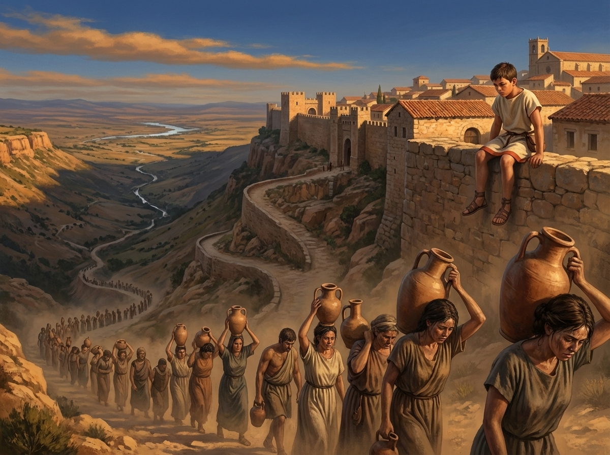
The Roman garrison town of Segovia sat on a high plateau in Hispania. The nearest river — the Fría — ran through a valley sixteen kilometers away. Every morning, women and slaves carried water up the hill in clay jugs. Two hours up. Two hours down. By noon, arms shaking, they had enough for one day.
The town was growing under Emperor Trajan. More soldiers meant more mouths, more baths, more fountains. The water carriers couldn't keep up.
Marcus watched them from the wall most mornings. He was twelve, the son of the chief engineer, and he never thought much about it. Water appeared. You drank it. That was how the world worked.
His father thought about nothing else.
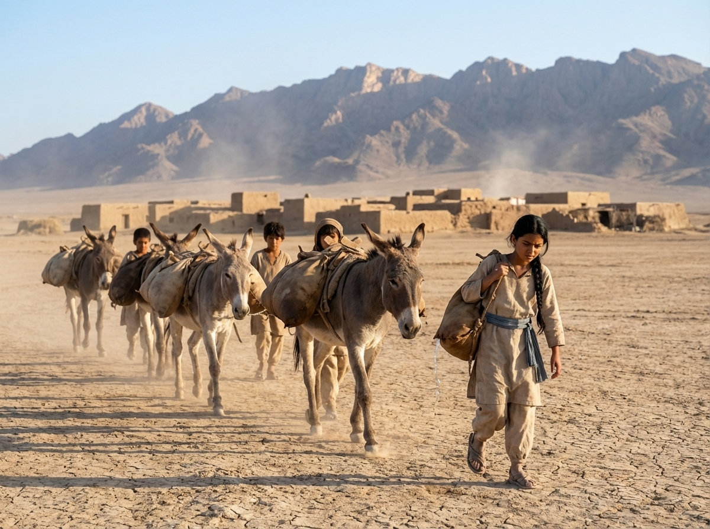
The settlement of Mehriz sat on the edge of a vast desert plain, south of the mountains. Rain fell in the mountains, not on the plain. Somewhere deep in the mountain rock, an aquifer held thousands of years of rainwater — an underground lake, invisible, unreachable. The water was there. The people were here.
Every morning, donkeys carried water skins from a distant spring. Some days the spring ran low. In summer, people rationed.
Sana hauled water skins with the other children and hated every step. She was eleven, and her father Kaveh — the muqanni, the master of underground water — had been hired by the settlement's elders to fix the problem. He'd been studying the ground for weeks. Tasting soil. Reading the land. Sana didn't understand what he was looking for.
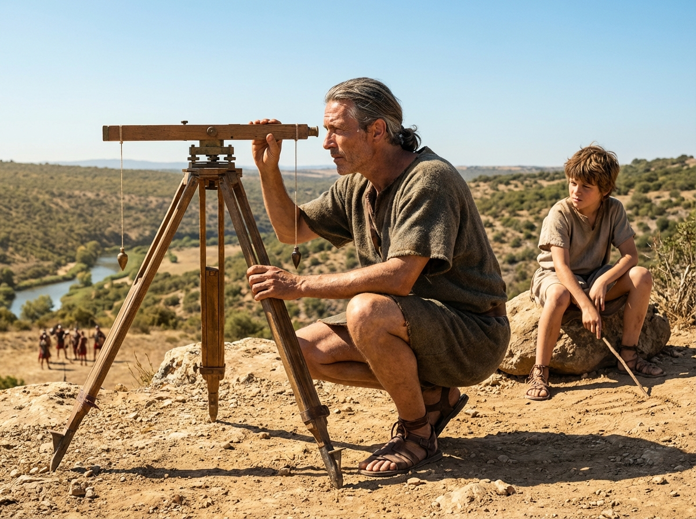
Marcus wanted to be a soldier. He watched the garrison troops drill on the parade ground — the sharp commands, the flash of iron, the precision of the formation. His father's work seemed dull by comparison: crouching over instruments, squinting at distant markers, scratching numbers in wax.
Marcus: You could command a legion.
Gaius: A legion conquers a city. An aqueduct keeps it alive. Which matters more in fifty years?
Gaius used a groma — two wooden arms in a cross, each end dangling a weighted plumb line — to survey the route. He was finding the exact path that dropped one percent over sixteen kilometers. One percent. For every hundred meters forward, the channel dropped one meter downward. Enough slope for gravity to pull the water, but gentle enough that the water wouldn't erode the stone.
Too steep and the channel tears itself apart. Too flat and the water stops.
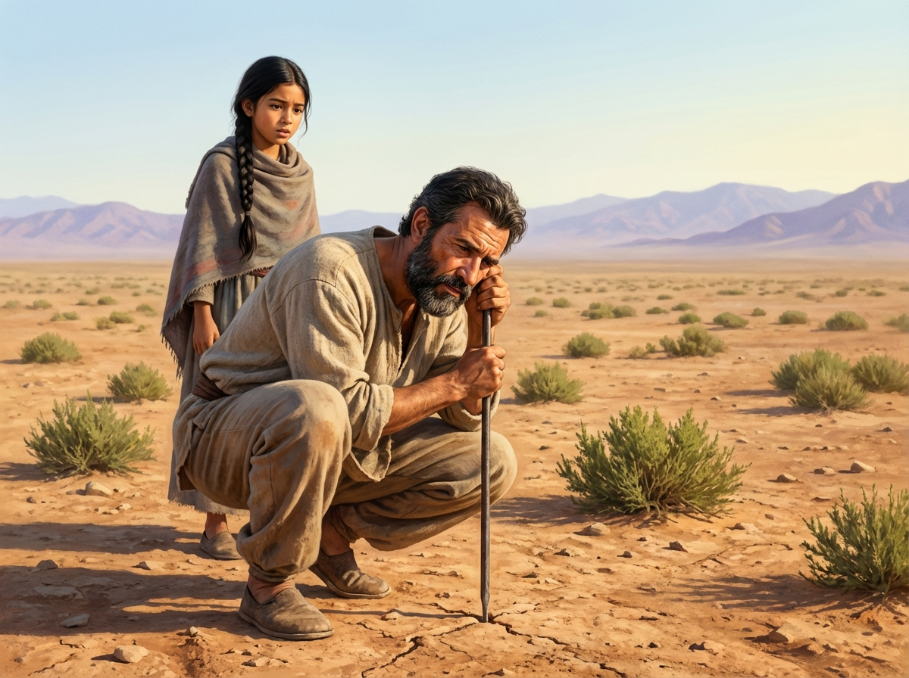
Sana watched her father prepare for the dig. He walked the surface slowly, studying patches of green vegetation, tasting soil for moisture, watching where morning dew collected. He drove an iron rod into the ground and listened to the sound it made — a dull thud meant dry rock, a faint ring meant hollow space, a soft resistance meant wet earth.
Sana: How do you know where the water is?
Kaveh: The ground tells me. Water is heavy. It pools at the lowest point of the rock. You can't see it from above. But the plants know. The dew knows. The earth's voice changes above water.
Kaveh explained the qanat: they would dig a vertical shaft straight down to the aquifer — the underground lake. Then they would dig a tunnel from the shaft to the settlement, sloping gently downhill so water flowed by gravity alone. No pumps. No towering arches. The tunnel did all the work, hidden underground.
On a flat stretch of rock outside the camp, Gaius showed Marcus how the aqueduct would work. He tilted a stone slab and poured water along its surface. It flowed — slowly, steadily, following the slope.
Gaius: That's all an aqueduct is. A stone channel on a precise slope. The arches aren't the point — they're just legs. They hold the channel up at the right height where the valley drops below the slope line.
He drew in the dust: the mountain, the valley, the city on its plateau. The water channel ran in a straight line with a gentle slope. Where the ground was high enough, the channel ran along the surface or just below it. Where the ground dropped away — in the deep valley before Segovia — the arches held the channel up at the right height. The tallest arches, twenty-eight meters high, would stand in the city center.
Marcus: No pumps?
Gaius: No pumps. Gravity does the work. We just have to give it the right path.
In the shade of a plane tree, Kaveh drew the qanat in the dust for Sana.
The mountain, where rain soaked into rock. The aquifer, the underground lake trapped in porous stone. The mother well — the first vertical shaft they would dig straight down to reach the water. Then the tunnel, sloping gently downhill from the mother well to the settlement, carrying water the whole way. Vertical shafts every thirty meters along the tunnel, punched up to the surface, for air and for hauling debris out.
Sana: But the tunnel is underground. How do you keep it straight? How do you keep the slope right?
Kaveh held up an oil lamp. "I watch the flame. Underground, air moves through the tunnel. The flame tells me which way is open and which way is blocked." He held up a plumb line. "And for the slope, I hang the line. I measure from the line to the tunnel floor. Every thirty meters, I check. If the floor rises even a finger's width, I correct it."
Sana: You do all that in the dark?
Kaveh: The dark is where the water is.
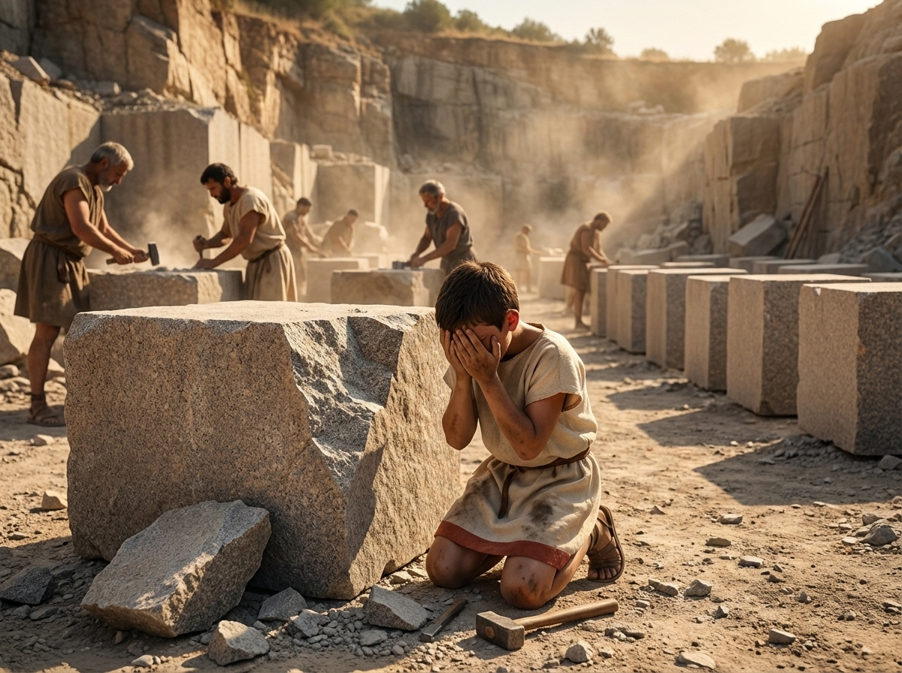
Gaius let Marcus help at the quarry. The granite blocks had to be cut perfectly — flat faces, square edges — because there would be no mortar. The stones would hold by gravity and friction alone: the weight of the stones above pressing down on the stones below, their flat surfaces locked together by their own mass.
Marcus was given a chisel and told to square a block's face. He struck too hard. The chisel skipped and chipped a corner off. The block was ruined for structural use — a chipped face couldn't bear weight evenly.
Marcus: A wasted stone.
Gaius: A lesson. In this work, force is the enemy. Precision is the tool. The stone doesn't care how strong you are. It cares how exact you are.
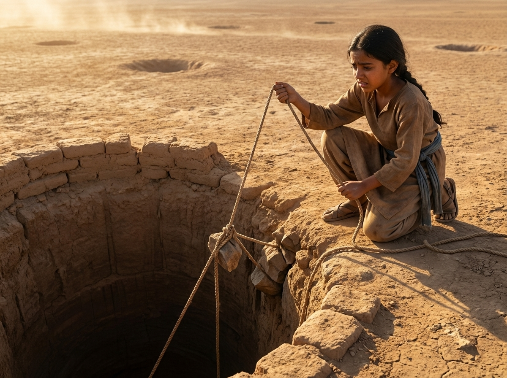
Kaveh let Sana lower a plumb line into the first shaft. The shaft was ten meters deep — a dark vertical hole just wide enough for one man to descend on a rope ladder. She held the line at the rim, waiting for the lead weight to steady so she could mark the exact center point on the surface.
A gust of wind caught the line. Her hand slipped. The line swung and tangled on a rock outcropping partway down. Now they had to send someone below to untangle it before they could continue. Half a day was lost.
Sana: I'm sorry.
Kaveh: The work beneath the ground is patient work. It doesn't forgive hurry.
He looked at her steadily. "Neither does the surface work. What you do up here — the shaft openings, the debris, the plumb lines — it's not less important because it's above ground. It's the eyes of the whole qanat."
The aqueduct was being built in sections. Marcus walked the route with his father — sixteen kilometers of channel, most of it a shallow trench lined with stone, covered with flat slabs to keep out debris and sunlight. Invisible. Underground. The miles nobody would ever see.
Gaius: People will see the arches. They'll say, "Look at the arches." But the arches are five hundred meters of the route. The other fifteen and a half kilometers? Underground and invisible. That's where the real work is.
Marcus watched the laborers dig the channel, line it with precisely fitted stone, test each section by pouring water and watching for leaks. One leaking joint could undermine the whole structure. They sealed joints with opus signinum — a special waterproof plaster made from crushed pottery mixed with lime.
Marcus's hands weren't strong enough for the mixing, so he carried the crushed pottery in buckets. Back and forth, back and forth. The invisible work that made the invisible work possible.
Kaveh descended into the qanat tunnel at dawn. Sana stood at the shaft opening, watching her father's lamp shrink to a point of light, then disappear as the tunnel bent. She couldn't follow. No one under fifteen went below.
She imagined what he saw: a tunnel barely wide enough for a man to crouch, carved from the rock by hand. The drip of water ahead — the aquifer was close. The flame of his lamp bending as air moved through the tunnel, showing him the way. His hands on the rock face, feeling for the grain of the stone, knowing where to cut and where to stop.
Above ground, Sana did what she could. She maintained the shaft openings — clearing pebbles and sand that fell in, shoring up the rims with mud brick, marking the positions with cairns of stone so the tunnel's path was visible from the surface. Without the markers, no one would know anything was there.
Kaveh (surfacing at dusk, covered in rock dust): The best engineering is the engineering that disappears.
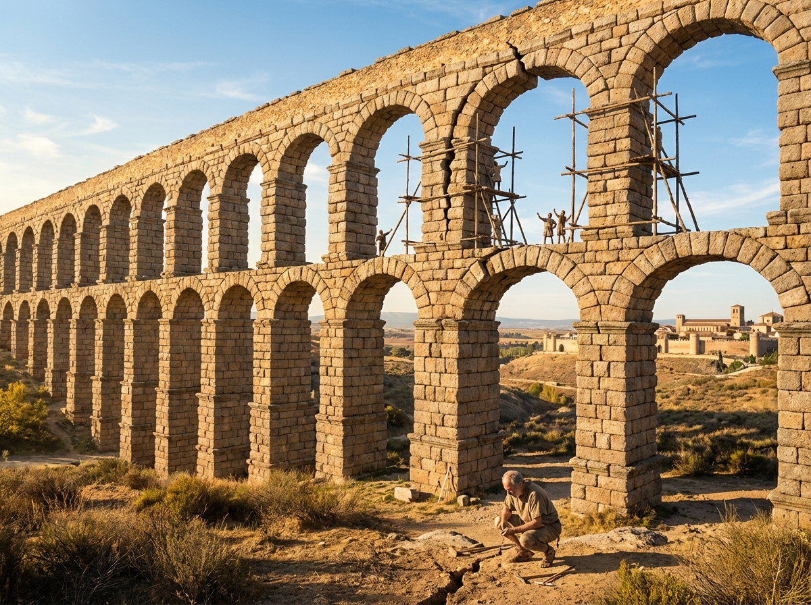
The arches were rising in the valley before Segovia. Double-tiered — a lower row of thick, heavy arches supporting an upper row of thinner, taller ones. The blocks were cut without mortar, stacked with precision, held by gravity alone.
On the sixth arch of the upper tier, a crack appeared. Not in the stone — in the alignment. The arch was settling unevenly, one side dropping lower than the other. If it continued, the arch would fail, and the arches on either side might go with it.
The masons blamed the stone — too soft, wrong grain. Gaius was not sure. He walked around the cracked arch for a full day, saying nothing, crouching at its base, looking at the ground rather than the stone.
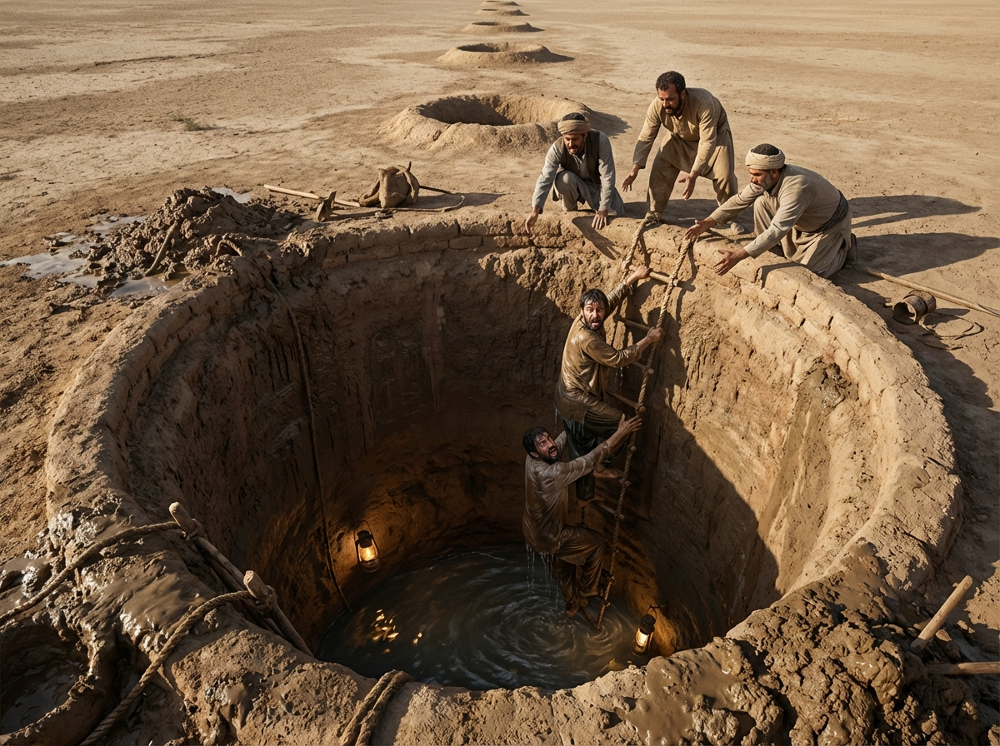
The tunnel had reached two hundred meters from the mother well. Kaveh and his team were digging through soft sandstone, making good progress. Then the tunnel wall broke open and water rushed in — not the steady seep of the aquifer they were heading toward, but a sudden flood. They'd hit an underground stream they didn't know was there.
The team scrambled back toward the nearest shaft. Kaveh was the last out, rope ladder swinging, water lapping at his heels. The flood filled twenty meters of tunnel behind them. Days of work drowned.
The crew argued at the surface. Some wanted to abandon the section and start a new tunnel on a different line — weeks of work lost. Kaveh said nothing. He lowered a lamp on a rope into the flooded shaft and watched the water level. It wasn't rising. The stream had found its balance. But the tunnel was still underwater.
Marcus had been watching the cracked arch for days while the engineers argued. He wasn't an engineer. He was a boy who had spent months walking the route, bored, with nothing to do but watch the land.
He noticed something: after yesterday's rain, water pooled around the base of the cracked arch differently than around the others. It sat longer. The ground didn't absorb it.
He dug with his hands. The soil was soft, sticky, blue-gray. Clay.
The other arches sat on bedrock. This one sat on a pocket of clay. Clay compresses under weight. As the stones piled higher, the clay beneath squeezed sideways, and the arch settled unevenly.
Marcus brought his father. Gaius dug his own test hole. Clay, three meters deep, then bedrock. He straightened up.
Gaius (to the foreman): Dig the foundations deeper. Through the clay, down to the rock.
He looked at Marcus.
Gaius: How did you see that?
Marcus: I've been watching rain for months. There was nothing else to do.
Gaius: There's always something else to do. You chose to watch.
Sana had been mapping the surface above the qanat for months. She knew every shaft opening, every cairn, every slight depression in the ground. She had walked the line dozens of times, maintaining what was hers to maintain.
Standing above the flooded section, she noticed something she'd seen before but never thought important: a line of tough, deep-rooted tamarisk bushes running across the surface at an angle to the tunnel. Tamarisk only grew where underground water was close to the surface.
The line of tamarisk told her exactly where the underground stream ran. It crossed the tunnel diagonally — from a rocky outcrop to the east, across their tunnel line, and off toward a dry wash to the west.
She brought Kaveh. He studied the tamarisk line, then looked at his tunnel map.
Kaveh: If we shift the tunnel eight meters north at this point — bend it around the stream instead of cutting through it — we avoid the water entirely.
He looked at his daughter.
Kaveh: The muqanni reads the earth. Above and below. I've been teaching you the below. You taught yourself the above.
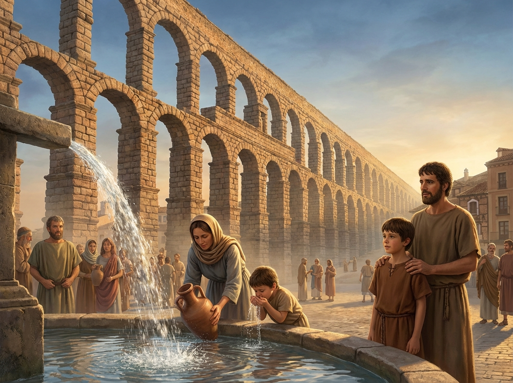
Months later. The channel was complete. The arches stood in the valley — one hundred and sixty-seven of them, the tallest twenty-eight meters high, rough granite blocks stacked without mortar, precise in their alignment. The channel ran along the top, narrow as a man's arm span, smooth and sealed.
At dawn, workers upstream pulled the wooden dam from the intake. The water from the Fría River entered the channel and began its journey — sixteen kilometers, dropping gently, pulled by nothing but gravity.
Marcus stood at the city end, in the plaza where the water would emerge. His father stood beside him. The town had gathered. An hour passed. Then the sound — a trickle, growing to a rush. Water poured from the outlet into the stone basin. Clear, cold, mountain water.
A woman filled a jug. A child cupped his hands and drank. Marcus looked at his father. Gaius watched the water, not the crowd.
Marcus: Will it last?
Gaius: If we built it right — longer than any of us.
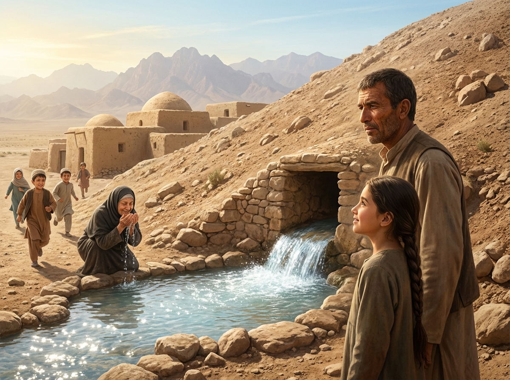
The qanat was finished. The tunnel stretched three kilometers from the mother well to the settlement, a gentle slope dropping one meter every five hundred. The vertical shafts dotted the surface like forgotten wells — unassuming, easy to miss.
At the settlement end, the tunnel opened at the base of a low hill. A stone-lined channel carried the water the last hundred meters to a reservoir in the village center.
Kaveh and Sana stood at the outlet as the last plug of earth was removed from the tunnel mouth. Nothing happened. Then — a drip. A trickle. A steady stream of water, cold and clear, flowing from the mountain aquifer through three kilometers of hand-carved tunnel, pulled by nothing but the faintest slope.
The village children rushed to the reservoir. An old woman knelt at the edge and cupped water to her face. Sana looked at her father. Kaveh watched the water.
Sana: Will it last?
Kaveh: If we built it right — longer than any of us.
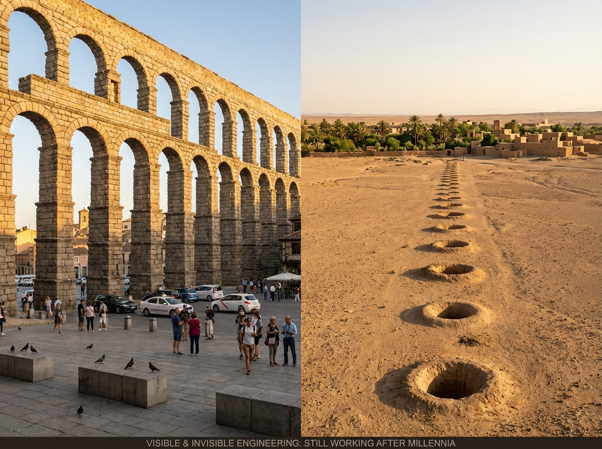
Two thousand years later, the aqueduct of Segovia still stands. Tourists photograph it. Pigeons nest in its arches. The granite blocks have never shifted. It carried water to the city for over a thousand years, and it could carry water again tomorrow if anyone asked.
Three thousand years after the first qanats were dug, they still carry water beneath the Iranian desert. You can't see them. You'd walk right over them without knowing. The only sign is the line of unassuming vertical shafts — and the village that shouldn't exist in a desert, but does, because someone carved a path for water in the dark.
One monument stands in the open, impossible to miss. The other is buried, impossible to find.
Both solved the same problem: how do you bring water to people who need it?
The answer, both times, was the same. You study the ground. You respect the slope. You trust gravity to do what gravity does.
And you do the work — the precise, invisible, patient work — that no one will remember you for.
"The best engineering is the engineering that disappears."
The aqueduct of Segovia and the qanats of Iran are both UNESCO World Heritage sites, still standing after millennia — monuments to patient, invisible work.